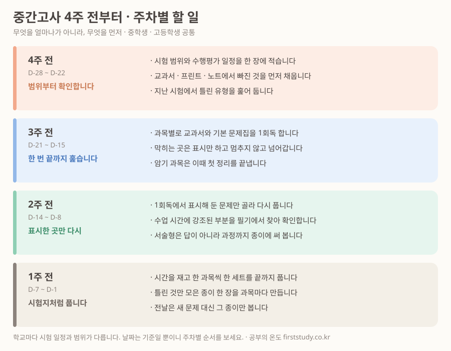

시험 4주 전이 되면 대부분의 아이가 같은 말을 합니다. "이번엔 진짜 열심히 할 거예요." 그리고 대개 같은 방식으로 합니다. 1번 과목부터 문제집을 펴고, 앞에서부터 풉니다. 3주쯤 지나면 앞 단원만 세 번 보고 뒷 단원은 손도 못 댄 상태로 시험을 봅니다.
시간이 부족해서가 아니라 순서가 없어서 생기는 일입니다. 4주를 주차별로 나누면 같은 시간으로 훨씬 멀리 갑니다.

이 표의 핵심은 2주 전입니다
네 칸 중 하나만 지킨다면 2주 전을 고르십시오. 여기서 성적이 갈립니다.
3주 전에 한 1회독은 사실 공부가 아니라 조사입니다. 무엇을 아는지 모르는지 알아내는 단계입니다. 그런데 많은 아이가 여기서 멈춥니다. 한 번 다 봤으니 공부했다고 느끼고, 2주 전에는 새 문제집을 또 앞에서부터 풉니다. 아는 문제를 다시 푸는 데 남은 절반을 씁니다.
1회독은 무엇을 모르는지 알아내는 일입니다. 실제 공부는 표시한 곳만 다시 보는 2주 전부터 시작됩니다.
자주 어긋나는 세 가지
- 4주 전에 범위를 안 적습니다. 범위를 모르면 어디까지 해야 하는지도 모릅니다. 수행평가 일정까지 한 장에 적어 두면 겹치는 주가 미리 보입니다.
- 3주 전에 막힌 곳에서 멈춥니다. 한 문제를 붙들고 30분을 쓰면 1회독이 끝나지 않습니다. 표시만 하고 넘어가는 게 규칙입니다.
- 1주 전에 새 문제집을 삽니다. 이때 필요한 건 새 문제가 아니라 시간을 재고 푸는 연습입니다. 아는데 시간이 모자라 틀리는 아이가 생각보다 많습니다.
과목 수가 많을 때
중학생은 보통 다섯에서 일곱 과목, 고등학생은 더 많습니다. 네 주를 모든 과목에 똑같이 나눌 수는 없습니다. 이렇게 갈라 놓으면 덜 꼬입니다.
- 누적되는 과목(수학, 영어)은 4주 전부터 매일 조금씩 붙입니다. 몰아서 하면 안 되는 과목입니다.
- 외우는 과목(사회, 과학, 역사)은 3주 전에 한 번 정리하고, 2주 전과 1주 전에 두 번 더 돌립니다.
- 수행평가는 시험 공부와 별개의 칸으로 잡습니다. 시험 기간에 끼워 넣으면 그 주가 통째로 날아갑니다.
학교마다 시험 일정과 범위가 다르기 때문에, 위 날짜는 기준일 뿐입니다. 중요한 건 날짜가 아니라 범위 확인 → 1회독 → 표시한 곳 → 시간 재고 풀기라는 순서입니다.
계획은 세웠는데 안 지켜진다면
순서를 아는 것과 그 순서대로 4주를 버티는 것은 다른 일입니다. 혼자 두면 2주 전에서 무너지는 아이가 가장 많습니다. 그럴 때는 옆에서 진도를 확인해 주는 사람이 계획표보다 효과가 큽니다.
상담은 무료이고, 지난 시험지 한 장이 있으면 어느 주차에서 막히는지 훨씬 빨리 보입니다.
무료 상담 신청하기위 그림은 인천과외가 정리한 일반적인 시험 대비 순서입니다. 출처를 밝히시면 자유롭게 옮겨 쓰셔도 됩니다.